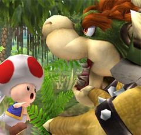

ETAPE 1

Salut Bowser, je suis Toad
Bonjour Toad, dis moi si tu as vu Peach.
Mmmmm, à une seul condition. je veux un champignon
Ligne éditoriale
Ce parcours vous invite à découvrir différents composants informatique présentés avec un ton décalé dans une ambiance mystérieuse. Le style d'écriture utilisera des phrases courtes pour créer un sentiment d'urgence et d'action.